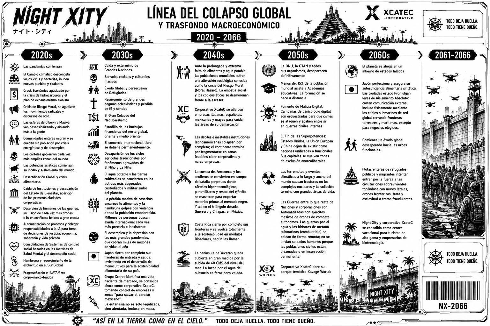

Pandemias, cambio climático, crisis económica y desertificación aceleran la caída de los estados de bienestar.
Night Xity // Archivo de campaña
← Volver a la portada2066 // Sistema activo
OFFLINE
Cronología · world building · propaganda · memoria de las partidas
Este archivo reúne lo que existe fuera de Citizen Net: el contexto de la campaña, los hitos canónicos, la estética de la ciudad y los rastros que dejan sus habitantes. Night Xity es una parte del HomieVerse; su historia se juega en la mesa y se conserva aquí.
El archivo se actualiza conforme avanza la campaña. La cronología visual que acompaña esta página fija el marco histórico de 2020 a 2066.
01 // Historia canon
Línea del colapso global
El marco de campaña recorre el colapso global entre 2020 y 2066: crisis climática y económica, desaparición de instituciones, guerras corporativas y el ascenso de Xcatec. La línea visual conserva los hitos que fijan el trasfondo jugado.

Se fragmentan las naciones, crecen los éxodos y Xcatec reconoce y consolida un nuevo mercado corporativo.
La escasez de agua y alimentos transforma territorios en zonas de disputa; la península de Yucatán enfrenta la subida del mar.
Desaparecen organismos globales y superpotencias. Las guerras, la radiación y el aislamiento reordenan la vida civil.
El éxodo alcanza las urbes fortificadas. Night Xity y Xcatec se consolidan como enclave de turismo de lujo y biotecnología.
02 // El mundo de juego
Una ciudad construida sobre las ruinas
Night Xity es el paraíso que Xcatec construyó para preservar experiencias de un mundo que ya no existe. La ciudad combina corporaciones, barrios, tecnología y supervivencia en el año 2066.
TODO DEJA HUELLA. TODO TIENE DUEÑO.
Xcatec
El poder corporativo que impulsa la ciudad y convierte la preservación, el turismo y la biotecnología en negocio.
La ciudad
Un enclave fortificado para visitantes de alta gama y empresarios, levantado mientras el mundo exterior vive desplazamientos y crisis.
La vida ciudadana
Cada personaje navega una economía opresiva, compra bienes y servicios, y deja un rastro persistente en Citizen Net.
03 // Imagen pública
Propaganda corporativa
La publicidad es parte del world building: Xcatec vende seguridad, lujo y futuro mientras la cronología registra el coste humano de ese paraíso. Los anuncios y piezas visuales se incorporarán aquí como documentos canónicos de campaña.
Señales de Xcatec
Logotipos, lemas, campañas y promesas corporativas que definen la estética oficial de Night Xity.
Ver publicaciones oficiales ↗Estética del mundo
Carteles, anuncios, arquitectura, tecnología y escenas de campaña forman el archivo visual de la ciudad.
04 // Memoria de mesa
Fotos y momentos de las partidas
Las sesiones también forman parte del canon compartido: los encuentros, personajes, escenarios y decisiones que construyen Night Xity en la mesa.
Registro fotográfico
Publicaciones recientes de Night Xity: fotos, anuncios y memoria visual. Si Facebook no carga aquí, abre la página oficial.
Abrir Facebook de Night Xity ↗Momentos canon
Los hitos de campaña se irán añadiendo junto con su fecha, contexto y material visual, manteniendo la línea temporal acordada en mesa.
05 // Universo compartido
Night Xity dentro de HomieVerse
HomieVerse es el universo común donde viven las experiencias, historias y mesas de Homie Ludens. Night Xity aporta su propia ciudad, cronología y campaña a esa memoria colectiva.
¿Qué es HomieVerse y qué lo hace complejo?
Conecta con la explicación y el archivo histórico de HomieVerse.
Explorar HomieVerse ↗Memoria compartida
La historia de Night Xity se conserva junto a las demás experiencias que construyen el universo de Homie Ludens.
Abrir archivo histórico ↗